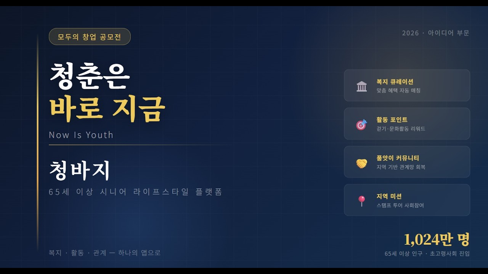

"복지·활동·관계를 연결하는 65세 이상 시니어 라이프스타일 플랫폼"

한국의 65세 이상 인구는 2024년 11월 1,024만 명을 돌파하여 전체 인구의 20%를 기록하였으며, 2036년 30% 도달이 전망됩니다. 그러나 시니어 세대의 실제 생활 문제는 정보 격차 · 활동 격차 · 관계 격차라는 세 축에서 오히려 심화되고 있습니다.
세 가지 구조적 격차를 단일 플랫폼에서 통합 해결하여, 시니어가 복지 수혜자를 넘어 자기 주도적 사용자로 전환되는 환경을 제공하기로 했습니다.
공모전 제출을 위해 기획서 · MVP · 홍보 콘텐츠를 통합 완성했습니다.
서비스 자체의 소개 영상 1편과, 시니어 사용자 관점의 문제 상황을 스토리로 풀어낸 시나리오 영상 3편을 기획·제작했습니다. "설명" 이 아닌 "일상 속 장면" 을 통해 서비스의 필요성을 전달하는 것이 목표였습니다.
"사용자가 이해할 수 있는 언어"라는 저의 핵심 철학이 시니어 UX 설계에서 가장 극단적으로 시험받은 프로젝트였습니다.
스마트폰 활용 역량 55.9점의 사용자를 위한 서비스는, 결국 '가장 좋은 정보'가 아니라 '가장 이해하기 쉬운 흐름'이어야 한다는 것을 다시 확인했습니다. 큰 글씨나 음성 안내 같은 기술적 배려보다 더 중요한 것은, 사용자가 '내가 이걸 할 수 있다' 는 확신을 가질 수 있는 flow 설계였습니다.